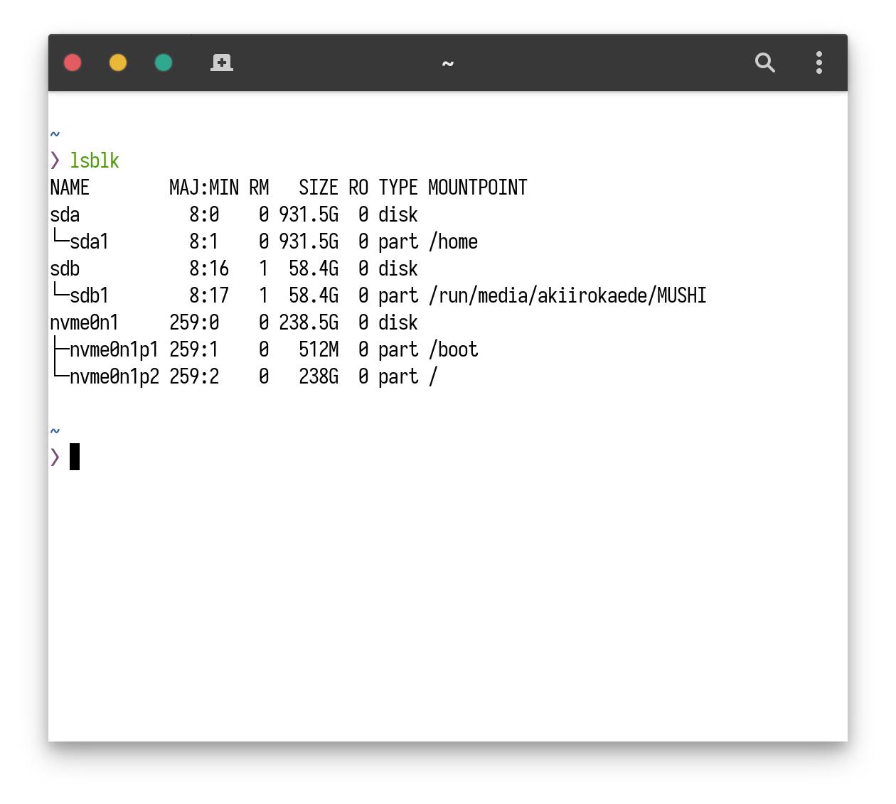
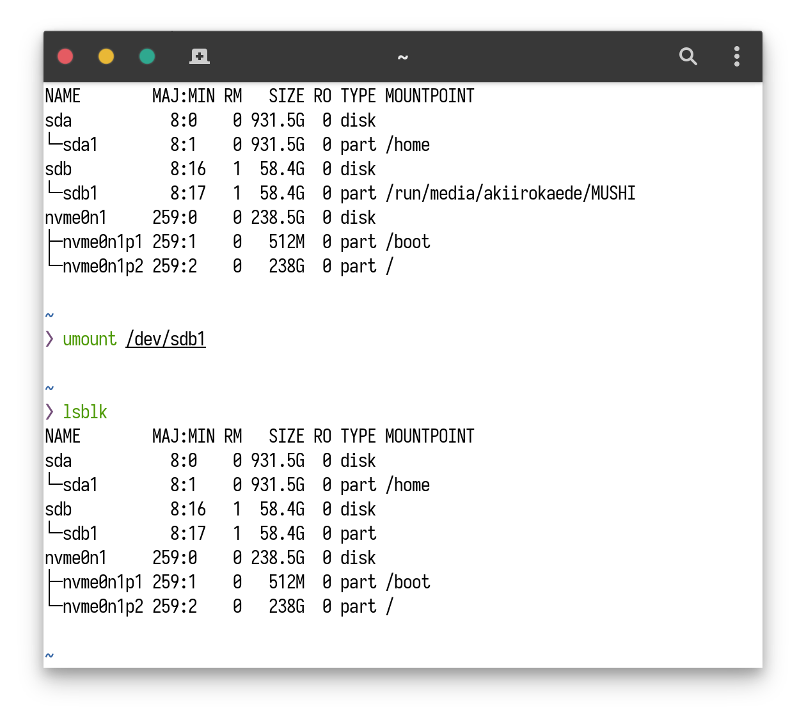
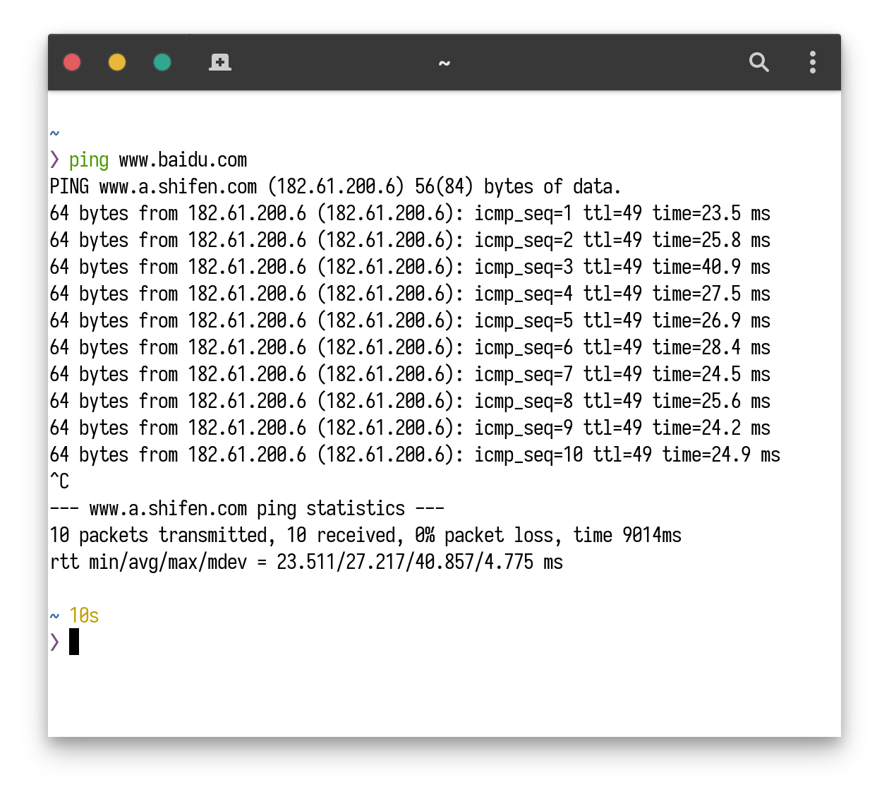
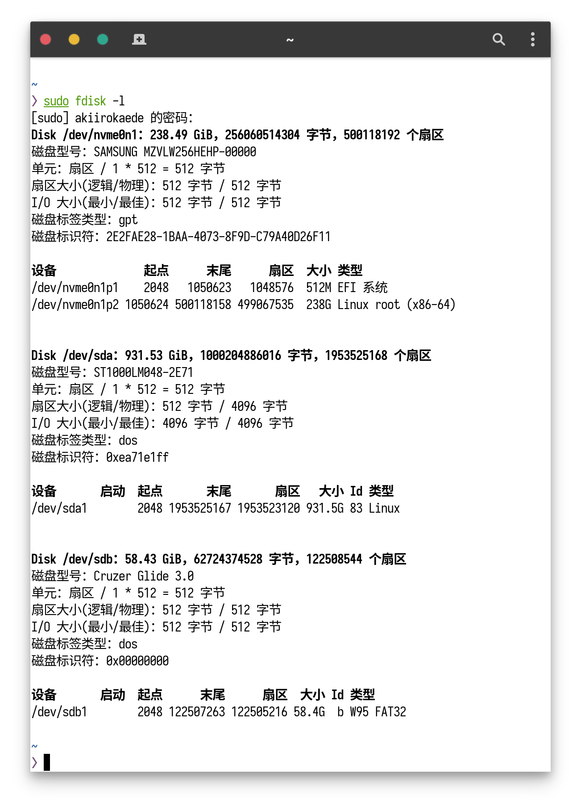
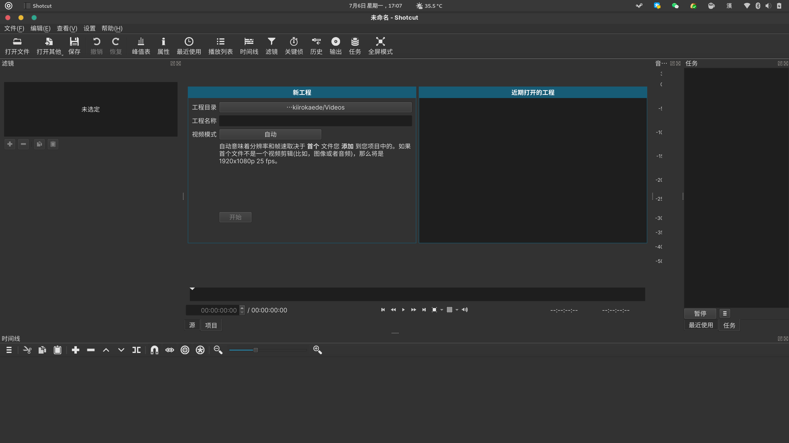

Arch Linux 安装配置教程及优秀软件推荐
这篇文章将包含一些大部分安装教程都没有涉及到的内容，即使你已经按照其他教程安装好了 Arch Linux，你依然可以从中获益并节省大量网络搜索各类文档的时间。
一、使用 Arch Linux 其实是为了避坑
虽然拿回了自己的 MacBook Pro，但是回归 Linux 之后突然没有了继续使用它的兴趣。macOS 在各个方面都很稳定和人性化，也更加适应国内软件生态，美中不足的是它却因此失去了定（zhe）制（teng）能力。不仅窗口管理是被设计师限制死了的，一些小细节也让我很不舒服，比如当你同时让两个软件全屏（比如一边看网页一边写代码的时候）时你是无法做到像 Windows 或者 Gnome 那样在不改变窗口焦点的情况下滚动页面的，时间久了非常影响心情和工作效率。
现在使用着的这台国产山寨水桶机上几年前就是安装的 Arch Linux，但是由于很长时间没有更新结果滚挂了。本着已经折腾过一次不想再浪费时间在安装系统上的心情就去整了一个 Ubuntu 20.04，结果使用体验非常糟糕：先是发现很多软件没有安装源需要加入各种 PPA，即使有也都是一些相当旧的版本（很多常用软件的最新版都对高分屏更加友好，比如 Arduino、Inkscape 和 Ardour）；使用 Snap 倒是可以安装一些软件源内没有的或是版本较新的软件，比如 Telegram 和某著名 IDE 公司的各种宇宙级开发工具，但是很多 Snap 软件包在打包的时候并没有考虑加入对输入框架的支持（并且类似于 AUR，很多应用后来都没有被打包者更新了）；最后更新了一次内核，结果 Ubuntu 的各种电源相关的行为都失控了且由于缺少资料我并没有定位到问题出在那里，遂决定离开 Ubuntu。刻录 Arch Linux 安装介质后发现我无法连接无线网络，又决定使用更加容易安装的 Manjaro，结果又是一场坑爹之旅。
现在很多热心的初学者都会推荐你入 Manjaro 的坑，并且把 Arch Linux 这个源头视为洪水猛兽……甚至某些 Manjaro 用户还会对 Arch 用户产生一种莫名的优越感。对我来说，有几个关键的原因再次迫使我离开 Manjaro：首先，Manjaro 自带的驱动管理器确实很方便，能够一键识别并安装好显卡驱动（包括 GUI 的显卡设置管理器），但是在使用 pacman 更新驱动之后却常常导致无法通过 Gnome 的电源设置更改屏幕亮度（我几年前就是 Manjaro 用户，并且持续使用了半年），调整各种设置之后依然无法解决这个 Bug；其次，在 Manjaro 下加入 Archlinuxcn 仓库意味着你可能会使包管理器的软件版本变得混乱，因为那个仓库本来就不是为了 Manjaro 用户搭建的，里面的包的依赖是根据 Arch Linux 来调整的；最重要的是，Manjaro 经常会对它维护的包进行魔改（包括 Gnome 插件），这导致一些我日常使用需要的软件或插件的行为和我的预期不大一致。所以在我拿到多余的网线之后，立刻重装成了正统的 Arch Linux。
二、简简单单的安装攻略
由于中文圈内有一个非常劣质的开发者社区，它的用户会经常海盗其他人的技术博客，甚至到了不去分辨海盗来的内容是否过时或存在错误的地步，严重污染了百度及其他搜索引擎的搜索结果，他们的文章日期也会误导很多新手以为看到的是最新的教程。Arch Linux 曾经更改过一次基础系统的安装方式，你百度的时候很有可能会搜到过时的教程。因此，如果你是按照搜索到的中文教程进行的 Arch Linux 安装，那么你应当至少去核对一次官方英文教程中的相关指令（由于作者很懒，如果自己不重装很大概率不会更新本文，所以对于本篇文章来说你也应当这样做，只是核对一下命令而已，国内某些城市的小学英语水平都够了）。
下面给出依据 2020年7月6日 的官方文档组织成的中文安装攻略，我也会加入一些自己的思路让你的安装过程更加顺畅，并且保证安装成的系统更加完整，满足日常生活、开发、游戏和打印文档的一系列需求。
1、下载系统iso
首先在 Arch Linux - Downloads 网页上挑选一个大陆镜像站下载系统iso文件。我所在的地区下载速度较快的有：163、tuna 和 ustc。
如果你的网络状况不是特别差，不需要验证 PGP signature，直接进行下一步吧。
2、制作U盘安装介质
如果你在 Linux 或 macOS 下制作安装介质，你可以使用非常方便的
dd命令。如果你使用 Windows，那么你可以使用一个拥有图形界面的刻录软件-usbwriter。
我已经很多年没有用过 Windows 了，而且那个刻录软件非常好操作，点几下鼠标就可以了，所以接下来主要介绍怎么使用 dd 命令。
首先，插入一个U盘（废话）。
然后，在命令行输入 lsblk 查看你的U盘被识别成了哪一个块设备，比如我的就是 sdb。

之后使用 umount 命令确保U盘下的所有分区都不处于挂载状态，比如我就应该输入 umount /dev/sdb1，如果你的U盘被分割成了多个分区，请务必使用 umount 命令依次卸载完它们。卸载之后，再次输入 lsblk 命令确认一下当前U盘的挂载状况。

可以看出没有挂载时U盘的分区后面的 MOUNTPOINT 为空。
现在，你便可以在终端输入 dd bs=4M if=/绝对路径/archlinux.iso of=/dev/U盘盘符 status=progress && sync 来制作U盘安装介质了。注意用你自己保存 iso 文件的路径和U盘的块设备名替换掉 if 和 of 后面的内容。输入后等待片刻即可收到刻录成功的提示。
3、安装基本系统
首先重启电脑，注意不要拔下U盘。
（1）从U盘启动live环境
这一步在不同品牌的电脑上都不一样，所以需要大家自行搜索一下自己的设备应该如何进行设置。通用的做法是在电脑刚刚重启的时候，就按下 F10 或 F12 来进入启动顺序的选择菜单，或者进入 BIOS 也可以调整启动顺序。
选择U盘后即可进入live环境，这个环境是在命令行中进行操作的，不论是安装系统还是之后滚动更新导致系统出了问题，都可以进入这个环境来对系统进行各种各样的修改。
（2）检查引导方式
目前的引导方式主要分为 EFI引导+GPT分区表 与 BIOS(LEGACY)引导+MBR分区表 两种，几乎比较新的机器都采用了 EFI/GPT引导的方式。如果你是近期才购入的机器，那你很大概率是前者！这二者的区别你可以在EFI、UEFI、MBR、GPT的区别一文中找到。
如果你无法确定自己的引导方式，你可以在命令行执行以下命令：
ls /sys/firmware/efi/efivars
ls 是类Unix系统下的常用命令，用来打印目录下有哪些文件，后面跟的参数是你想要查看的具体目录。如果这个命令输出了 ls: cannot access '/sys/firmware/efi/efivars': No such file or directory，那么你就是以 BIOS 方式引导的，否则你是以 EFI 方式引导。
（3）联网
从 Arch Linux 的安装镜像大小就可以看出来，里面包含的内容很少，所以我们并不可以离线安装系统，因为我们需要联网来下载各种安装到机器上的软件包。
- 如果你使用有线网络并且路由器支持 DHCP 的话，可以插上网线然后执行
dhcpcd获取 IP 地址 - 如果你使用无线网络，那可以使用
wifi-menu进行联网，如果它不能正常工作，请自行阅读官方文档中的无线网络设置
执行上述任意一种联网命令后，可以 ping www.baidu.com 查看能否正常联网，如果能正常联网的话，这条命令应该返回如下结果：

（4）更新系统时间
在命令行输入 timedatectl set-ntp true 来保证系统时间是准确的。
（5）硬盘分区与格式化
警告：为了防止数据丢失，在输入此部分的命令时请务必确保没有输错，并且真的知道自己在做什么。如果实在不确定，推荐先不要在实机上安装，而是使用虚拟机练手。
很多人觉得 Arch Linux 不好安装大都来源于此，初学者可能根本不能理解自己要对硬盘做什么，所以在命令行下进行这项工作更加令人痛苦。
在分区之前，我们应该了解一下 Linux 系统的目录结构。这也是你在安装 Arch Linux 时能够学习到的为数不多的有用的知识。
Linux 的目录与 Windows 的目录不一样：
- Windows 以存储介质为主，主要以盘符（C盘、D盘等）及分区来实现文件管理，然后在各个盘符之下才是目录，因此目录显得不那么重要，你可以将除系统文件之外的任何用户文件放到任何目录下
- Linux 更好相反，它以树形目录结构的形式来构建整个系统，比如所有的文件都挂载在根目录
/下，所有的用户都会在/home下生成一个用户主目录，大部分命令行软件都安装或链接在/bin目录，全局配置文件大多在/etc目录下，你之后使用 pacman 包管理器安装的软件大部分在/usr目录下等等
Linux 是以树形目录结构的形式来构建整个系统的，可以理解为树形目录是一个用户可操作系统的骨架。虽然本质上无论是目录结构还是操作系统内核都是存储在磁盘上的，但从逻辑上来说 Linux 的磁盘是“挂在”目录上的（如果你是用
dd命令制作的启动U盘，那你对挂载这一概念应该已经有所体会了），每一个目录不仅能使用本地磁盘分区的文件系统，也可以使用网络上的文件系统。
一般来说，如果你只有一块硬盘，那么你只需要划分好根目录 / 的分区即可；如果像我一样，有一块容量较小的 SSD 和一块容量较大的机械硬盘，也可以选择将根目录 / 划分到 SSD 上，然后将 /home 划分到机械硬盘上。其他的目录对桌面用户来说我不建议手动分出来，尤其是某些目录并不允许你分到和根目录 / 不一样的硬盘上，新手容易翻车。
查看当前的分区情况
输入命令 fdisk -l，你可以看到类似于下面的结果：

可以看到我有一块被视为 nvme0n1 的 SSD，一块被视为 sda 的机械硬盘。显然为了让系统丝滑运行，我们应该将系统安装在固态上。由于我是 EFI 引导，所以在 nvme0n1 上先创建了一块 512M 的 EFI 系统，然后又将固态硬盘的剩余空间分给了 Linux 根目录 /。机械硬盘上显示的 Linux 指的是它是用作 Linux 文件系统的，这个之后会被挂载为 /home 。
EFI/GPT 引导方式的分区方法及格式化
首先需要创建一个 EFI 引导分区：
执行命令：
fdisk /dev/sdx（将 sdx 替换成要操作的磁盘，比如我就要替换为 nvme0n1）进入 fdisk 的操作环境后，可以输入 m 查看帮助文档。和分区相关的指令大概有：
- d 删除分区（用于删除原来的分区，给新的分区腾出空间） - n 新建分区 - t 更改分区类型，比如让某个分区成为 EFI 系统，让某个分区成为根目录 - w 保存修改使用 d，然后输入一个分区的序号，就可以删除那个分区。
使用 n，首先会让你选择起始扇区，这个一般不需要更改，直接回车即可，然后可以输入一个期望的分区大小的值，这个值可以以
M或G结尾，一般来说 EFI 系统的分区大小都是 512MB，所以这里输入+512M即可。输入 t，并选择新创建的分区序号来更改分区类型，输入 l 可以查看所有支持的类型，然后输入 EFI 对应的序号就可以了。
然后需要创建一个根目录分区：
一般来说，根目录应该和 EFI 位于同一块硬盘上，所以我们可以在上一步的基础上继续创建根目录分区。
输入 n，然后全部数值默认即可。
输入 t，将新分区的类型设为对应你机器指令集的 Linux root，比如我就设为了 Linux root(x86_64)。
输入 p 确认自己成功创建了 EFI 和 Linux root 分区，然后输入 w 将之前的所有操作写入磁盘使其生效
(可选)按照之前相同的套路，在机械硬盘上创建一个 Linux 分区，之后用于挂载
/home目录，我们在日常使用中的很多文件都会存放在该目录下，所以正好将机械硬盘当作数据盘来使用，如果你之后会使用 steam 玩游戏，那么 steam 默认安装的游戏也会在这个目录下。这一步正好用于验证你是否消化了这部分的教程。格式化新创建的两个分区：
EFI 系统分区必须是 FAT32 格式，我们可以使用
mkfs.fat -F32 /dev/sdxY （请将sdxY替换为刚创建的分区，比如我，就应该替换为 nvme0n1p1）命令格式化它。大部分人的根目录分区都会设置为 ext4 格式，虽然现在关于哪种文件格式更先进的讨论不绝于耳，但是对于个人桌面用户来说其实区别不大，ext4 也更容易把丢失的文件找回，所以这里就从善如流的将它格式化为 ext4，使用命令
mkfs.ext4 /dev/sdxY （请将的sdxY替换为刚创建的分区，比如我，就应该替换为 nvme0n1p2）即可。（可选）聪明的你一定已经直到
/home要怎么格式化了，没错，也把它格式化为 ext4 即可。
BIOS/MBR 引导方式的分区方法及格式化
现在这样的机器已经很少了，如果你不幸使用的是这样的机器，那么推荐你更新换代一下自己的工具。
这种引导方式不需要创建 EFI 引导分区，你只需要按照上面的教程，创建根目录分区即可。
（6）挂载文件系统
这里需要使用 mount 命令。
首先我们需要将根目录分区挂载上，输入 mount /dev/sdxY /mnt （请将sdxY替换为之前创建的根目录分区，比如我，应该使用 nvme0n1p2） 即可。
如果你是 EFI/GPT 引导方式，那么你还需要将 EFI 分区挂载到根目录里的 /boot，输入 mkdir /mnt/boot 和 mount /dev/sdxY /mnt/boot （请将sdxY替换为之前创建或是已经存在的引导分区，我的话，应该使用 nvme0n1p1） 即可。（BIOS/MBR 引导方式无须进行这一步）
（可选）如果你之前也在机械硬盘上创建了一个用于挂载 /home 目录的 Linux 分区，那么你应该已经知道怎么做了，mkdir /mnt/home 之后照葫芦画瓢吧～
（7）选择镜像源
题外话
安装镜像内已经内置了 Vim 编辑器，不用管网络上各种撕逼的言论，这里我们只是想用它更改一些配置文件而已，基本上只要记住几个按键就够了。在命令行下，这个编辑器的效率很高，所以你应该学会它的基本使用方法。你可以阅读 简明 Vim 练级攻略 这篇文章中的 第一级-存活 部分，这就已经足够完成本部分的内容了。
当然，如果你非常不想在安装系统的时候学习另一个软件的使用方法，那么你也可以使用 nano 作为替代。但下面的内容默认你使用 Vim 编辑器来编辑各种配置文件，如果你不使用 Vim，请自行搜索 nano 的用法。
镜像源是什么
镜像源是我们以后下载软件包的来源，想想我们平日访问国外网站的速度，如果不选择国内的镜像源，将会浪费非常多的时间在下载软件包上。我们需要根据自己所在的地区来选择不同的源来加速这一进程，比如我所在的华北地区访问 163 或 tuna 的源的速度是最快的，由于 163 更新源不如 tuna 勤快，所以我比较推荐华北用户使用 tuna 的源。
更换镜像源
- 首先使用 Vim 编辑镜像列表文件
vim /etc/pacman.d/mirrorlist。 - 进入编辑器后，先按一下
/，然后输入tuna即可跳转到 tuna 源的网站链接那一行，然后再按一下回车便能回到普通模式了。 - 点击两下 d，可以剪切 tuna 源的网站链接这一行的内容。
- 点击两下 g，回到镜像列表文件的开头。
- 按住 Shift 键，然后点击一下 p，即可将 tuna 源粘贴到镜像列表文件的开头。
- 先按一下
:，然后输入x并回车，便可保存我们的更改并退出 Vim 编辑器。
注：如果这一部分翻车，可以在普通模式下输入 :q!，在不保存变动的情况下退出 Vim 编辑器。
（8）安装基本包
我们现在可以安装对于 Arch Linux 系统来说最最基本的软件包了，它们涵盖了一些基础软件、Linux 内核和一些 Linux 的驱动。
输入 pacstrap /mnt base base-devel linux linux-firmware dhcpcd 即可。
如果上一步替换的镜像源没有什么问题，那么等待一段时间，当命令提示符重新出现的时候就代表我们已经安装完了基本包。
（9）配置 Fstab
我们需要生成用于自动挂载分区的 fstab 文件。
执行 genfstab -L /mnt >> /mnt/etc/fstab 即可。
（10）进入搭建好的基本系统中
输入 arch-chroot /mnt 即可，然后我们之后的操作就都是在我们安装在自己的硬盘上的系统上进行操作了。
（11）更改系统时区
中国大陆用户把时区设置为上海就行了。
首先输入 ln -sf /usr/share/zoneinfo/Asia/Shanghai /etc/localtime。
然后输入 hwclock --systohc。
（12）本地化
本地化其实就是指你的系统想要使用什么语言和编码，现在大家基本都使用 UTF-8 编码。
- 输入
vim /etc/locale.gen编辑选择编码的文件 - 照葫芦画瓢，在普通模式下使用
/来查找zh_CN.UTF-8 UTF-8，zh_HK.UTF-8 UTF-8，zh_TW.UTF-8 UTF-8，en_US.UTF-8 UTF-8和ja_JP.UTF-8 UTF-8等编码格式，然后去掉它们前面的# - 退出 Vim 后，执行
locale-gen - 输入
vim /etc/locale.conf然后在此文件的第一行写上LANG=en_US.UTF-8，保存退出即可。
（13）网络设置
首先需要创建一个 hostname 文件，这个文件代表了本机的名称。
执行 vim /etc/hostname 然后在它的第一行输入一个你喜欢的名字即可，推荐仅仅使用英文字母。
然后我们需要创建一个基础的 host 文件，这个是用于地址解析的。
执行 vim /etc/hosts，然后依次添加如下内容：
1 | |
注意将 myhostname 替换成你自己设置的 hostname。
（14）设置 Root 密码
Root 是 Linux 中具有最高权限的账户，可以理解为一个系统中的上帝。我们应该给 Root 账户设置一个密码来增强系统的安全性，Cracker 在试图侵入你的系统时候的第一步都是获取你 Root 账户权限。
当然，只是设置 Root 密码还不够，由于Root 账户可以操作系统内的一切，使用不当将会产生各种安全问题，因此之后我们会新建一个普通用户来进行日常使用（如果你之后打算使用 Gnome 桌面环境，这一步是必须的，因为你无法通过 Root 账户直接登录 Gnome）。
执行 passwd，根据设置输入两次你心仪的密码即可，推荐设置的复杂一些。
（15）安装配置 Boot loader
首先，你需要安装处理器制造商发布的对处理器微码的稳定性和安全性更新。这些更新提供了对系统稳定性至关重要的错误修复。如果没有这些更新，你可能会遇到不明原因的崩溃或难以跟踪的意外停机。
- 如果是 Intel CPU，你需要先执行
pacman -S intel-ucode - 如果是 AMD CPU，你需要先执行
pacman -S amd-ucode
然后，我们需要安装 Grub2 软件（如果曾经安装过 Linux，记得删掉原来的 Grub）。
输入 pacman -S os-prober ntfs-3g grub efibootmgr 即可安装所有需要的软件包。
- 如果为EFI/GPT引导方式：
- 首先执行
grub-install --target=x86_64-efi --efi-directory=/boot --bootloader-id=grub - 然后执行
grub-mkconfig -o /boot/grub/grub.cfg - 如果报类似于
grub-probe: error: cannot find a GRUB drive for /dev/sdb1, check your device.map的错误，并且 sdb1 是U盘块设备下的分区名，那么可以无视掉这个错误。
- 首先执行
- 如果为BIOS/MBR引导方式：
- 首先执行
grub-install --target=i386-pc /dev/sdx （将sdx换成你安装的硬盘，注意一定要是硬盘块设备名称而不是分区名） - 然后执行
grub-mkconfig -o /boot/grub/grub.cfg
- 首先执行
4、进一步配置系统
在上一部分中，我们已经安装好了 Arch Linux 的基本系统，很多教程都会让你退出live环境，然后进入安装好的系统中进行进一步的配置，但在这里我不推荐你这么做。我们安装好的基本系统可能无法联网，并且现在进入它，依然得面对着和live环境一样的命令行界面（甚至更糟，你的命令行解释器没有经过配置，体验比live环境的时候还要差）。一个更加稳妥的方法是继续在live环境中安装必需软件包。
（1）新建用户
执行以下命令来创建一个名为 username 的用户（请自行替换 username 为你的用户名）：
useradd -m -G wheel username （请自行替换username为你的用户名）
然后执行 passwd username （请自行替换username为你的用户名） 为新用户设置一个密码。
执行 pacman -S sudo 安装 sudo 命令，然后执行 visudo 编辑那些用户可以使用 sudo 命令提升权限，找到 # %wheel ALL=(ALL)ALL 这一行去掉开头的 # 即可。
之后我们新创建的用户便可以平时使用普通权限，然后在安装软件包或编辑全局配置的时候使用 sudo 获取 Root 权限了。这样做既保障了平时系统的安全，也给用户的命令行体验更加灵活。
（2）安装各种驱动
显卡驱动的安装
对大部分人来说，首先应该安装 intel 的集成显卡，sudo pacman -S xf86-video-intel。
如果你使用的是两年以内购买的 Nvidia 10系及以上的显卡，那么还需要执行 sudo pacman -S nvidia nvidia-utils nvidia-settings cuda cudnn，这个是 Nvidia 的私有驱动及计算加速库，我明白很多人对私有驱动都有洁癖，但是为了保证你日常的流畅使用，你必需克服这个心理问题。
打印机驱动的安装
不知道为什么，很多 Arch Linux 的安装教程都没有涉及打印机的问题，对于现代人来说，打印机应该是生活和工作的必需品吧？
首先执行 pacman -S cups avahi samba，然后执行 systemctl enable org.cups.cupsd.service 让打印机服务开机自启动。
如果使用惠普打印机的话，可以执行 pacman -S hplip 安装惠普打印机的开源驱动，其他打印机的话，请自行搜索官方 wiki 寻找相应驱动。
蓝牙驱动的安装
首先执行 pacman -S bluez 安装蓝牙的协议栈。
然后执行 pacman -S bluez-utils 安装 bluetoothctl 工具。
最后执行 systemctl enable bluetooth.service 让蓝牙服务开机自启动。
（3）安装 Xorg
Xorg 是 Linux 下的一个著名的开源图形服务，我们的桌面环境需要 Xorg 的支持。由于 Linux 桌面社区的分裂和一系列的历史原因，使用 Xorg 是更为稳妥的选择。
执行 pacman -S xorg 即可。
（4）安装桌面环境
Linux 下有很多桌面环境可以使用，对高分屏支持较好的有 Gnome、KDE 和 Xfce。
这里我推荐你安装 Gnome，因为它配置起来更加容易（GTK 主题和 Gnome 功能强化插件什么的），并且安装后它就已经自动帮你缩放好了大部分软件。
执行 sudo pacman -S gnome gnome-extra gnome-shell 即可，它包括 Gnome 桌面环境、全套的 Gnome 应用以及 GDM 显示管理器。完美覆盖了一个桌面环境应该有的最基本的各种用途的软件。
为了可以开机自动进入图形环境，我们还需要执行 systemctl enable gdm.service 让 GDM 显示管理器开机自启动。
（5）配置网络
Gnome 桌面环境使用 NetworkManager 这个网络服务，所以我们需要让它开机自动启动。
执行 sudo systemctl enable NetworkManager 即可。
（6）重新启动
我们现在依然是在live环境中，只是用 chroot 访问了我们自己搭建的系统而已。要想重新启动，我们需要先退出自己搭建的系统，然后卸载挂载的目录。
首先执行 exit，我们就回到了live环境的会话中。
然后依次执行 umount /mnt/boot，umount /mnt/home（如果有）。umount /mnt。
最后执行 reboot。
趁着电脑刚刚重启，拔掉U盘，之后在 Grub 界面中选择 Arch Linux 即可启动我们的系统。经过上述操作后，我们便可以直接进入图形界面，使用 Gnome 自带的网络设置进行联网操作了。
（7）中文本地化
打开终端，输入 pacman -S noto-fonts-cjk ttf-hanazono ibus-rime 安装中文字体（你也可以选择其他中文字体）和中文输入法。
在 gnome-settings 中的 Region & Language 下把语言改为汉语，格式改为中国，然后重启。
重启后再次进入 Region & Language，加入中文输入源，之后就可以正常使用了。
注：为了便于使用终端，重启后请不要将诸如 Documents 的目录名改为相应中文（这个实现着实丑陋，不如 macOS 下不替换真正的目录名称，只更改 finder 显示那样优雅便利）。
三、优秀软件推荐
如果你严格按照上述教程安装好了 Arch Linux 系统，那它已经能够正常运行起来了，但是 2020 年了，我们往往还有着板绘、制作视频、编曲和玩游戏等需求，下面给出我日常使用中筛选出的各分类软件中的佼佼者。
部分软件可能需要你启用 archlinuxcn 软件源，部分软件的正常运行可能需要32位的库，因此，在安装它们之前，你应该先编辑一下 pacman 的配置文件：
执行
sudo vim /etc/pacman.conf（如果找不到 vim，那么先执行sudo pacman -S vim）。在该文件中找到：
1
2#[multilib]
#Include = /etc/pacman.d/mirrorlist然后删掉它们之前的
#。然后此文件末尾添加如下内容：
1
2[archlinuxcn]
Server = https://mirrors.tuna.tsinghua.edu.cn/archlinuxcn/$arch执行
sudo pacman -S archlinuxcn-keyring导入 GPG key。执行
sudo pacman -Syu全面更新系统。
下面开始介绍各领域的优秀软件，它们都可以直接通过 pacman 包管理器进行在线安装或在 Github 找到本地安装包。
1、办公软件
GoldenDict 用于翻译英文生词
TexLive 全家桶 用于搭建 Latex 环境
TeXstudio 用于书写和编译 Latex 文档
Calibre 用于一站式管理电子书，包括但不限于电子书格式转换等功能
Typora 所见即所得的 markdown 编辑器，和坚果云配合起来能组成一个非常好用的笔记系统
libreoffice-fresh 一个开源自由的 Office 软件，推荐的理由是它有一个易于使用的命令行工具并且包含一些 WPS 没有的软件
WPS Office 就日常使用来说更加适合国人的习惯，在 Libre Office 上你连让段落缩进两个汉字都是一个麻烦的事情
2、编程软件及教育软件
Android Studio 做 Android 开发必备的 IDE
Arduino IDE 开源硬件 Arduino 的集成开发环境，便于烧录
Vistual Studio Code 微软出品的现代编辑器，添加插件后可作为轻便的 IDE 使用（比 Vim 和 Emacs 容易配置多了，同时又比 Atom 所需资源少）
DBeaver 可视化管理所有流行数据库
GitKraken 一个超酷炫的可视化 Git 管理器
Pencil 一个跨平台的原型设计软件，虽然不是那么好用，但聊胜于无
Zeal 一个可离线阅读编程语言或库文档的软件
Anaconda 著名的 Python 科学计算发行版
Docker 现在还有程序员不知道这个吗？
Godot 极端简单好用的游戏引擎，自带编辑器，制作中小型游戏不能更快
Ren’Py 制作 Galgame 超级好用的引擎
Julia 用于科学计算超级迅速
coq-ide 闲着没事可以玩玩智力游戏
DrRacket 学习 SICP 的时候可以使用，除此以外就……
Postman 测试网络 API
Vim、Emacs、Builder、Glade、QT Creator、CMake 用于 C 或 C++ 的通用开发和 GUI 开发
GNU Octave 入门机器学习的时候使用的类似于 Matlab 的软件
GeoGebra 用于绘制数学图形
Anki 卡片速记法
Mendeley Desktop 用于管理文献
3、互联网软件
Thunderbird 一个邮件管理软件
Evolution 比 Thunderbird 慢，但是 Gnome 自带了，还能方便地和 Gnome 日历集成在一起
Google Chrome 最流行的网页浏览器之一，有丰富的插件可供选用
Firefox Developer Edition 网站开发者的最佳浏览器，可以方便地查看 json 代码等等，还能识别无效的 CSS 语句
坚果云 全平台的网络云存储服务，我都是拿来当同步盘使用的
TeamViewer 远程管理软件
Skype 视频通话~
deepin.com.qq.office 在大陆，不得不使用一个 QQ，在高分屏下 Tim 的表现更流畅
wine-wechat 搭配 wine-for-wechat 在 archlinuxcn 源可以找到，是新打包的 Wine 版本，甚至可以使用微信小程序
Telegram Desktop 大名鼎鼎的电报，里面可以找到不少相当硬核的编程小组
HexChat 一款提供了图形界面的 IRC 聊天软件
Wireshark 这……难道有人不知道这是做什么的吗？
4、图形软件
Peek 可一键录屏制作 gif 动图
Blender 最出名的 3D 模型、动画制作、游戏制作软件之一，私以为比其他 3D 软件好用
Krita 数码艺术家绘图专用软件，超级好评，比 Windows 下的 Sai 功能强大许多，还拥有一个强大的笔刷引擎
MyPaint 适合画素描和打草稿
Gimp 目前与 Photo Shop 根本没法比，但你别无选择，它对高分屏显示的支持也很糟糕
Inkscape 开源的矢量图片编辑器，对于 UI 设计来说并不好用，但是也找不到什么替代品了，最新版本对 HiDPI 的支持非常完美
DarkTable 据说是 Linux 下的 lightroom，但是我觉得不太好用……也没有什么可选的替代品了
OpenToonz 没事可以试着做一点意识流小动画
5、系统工具
BlenchBit 系统洁癖者的最爱
unzip-natspec 替换自带的 unzip 程序，不需要指定字符集编码即可解决 Linux 下解压 zip 出现乱码的情况（无论是简体中文、繁体中文、日文）
Boxes 如果你也使用 Gnome，那么它是自带的软件，用于创建虚拟机
6、影音软件
Aegisub 字幕软件，高级用户可借此创建非常绚丽的字幕特效
网易云音乐 官方客户端经过修改快捷方式后可以支持 HiDPI 显示，其他的开源版本功能都很差
Vocal 开源的最佳播客客户端，可以用来听苹果播客，也可以用来添加自定义的源
Spotify 曲子多，也有很多播客资源，只可惜大陆无法直接访问
OBS 做直播或者录制视频最好用的软件，没有之一
bilibili-live-helper 逸站的直播助手，arhclinuxcn 源中可以找到
VLC 本地音乐播放，用来播放视频还能直接下载网络上的字幕
Shotcut 对轻度用户来说最棒的视频编辑软件，剪辑 4K 都不卡顿
MuseScore 编曲
LMMS 类似水果的开源免费音乐制作软件
Ardour 好用但有些复杂的音频编辑器
Audacity 丑但是好用，用来剪辑音频最棒了
SoundConverter 音频格式转换，也可以用于提取视频中的音频部分，我经常用来给我妈提取广场舞的曲子
HandBrake 格式转换软件，但我很少用到，之前做游戏的时候有使用它转换过游戏素材
7、游戏
gbrainy 提升智商~
Minecraft 我的世界与别人的世界，注意在 archlinuxcn 源中下载官方的 Laucher 哟
OSU! 其实是用 Wine 模拟的，但配置后并不会延迟和卡顿
Gnome-扫雷 我的 1060 就是为了扫雷而存在的（雾）
Gnome-数独 杀时间利器
GNOME Twitch 用来看 Twitch 直播
Discord 国外的 YY，然而我还没找到一起玩游戏的小伙伴（悲）
Steam 可能需要32位的库才能正常运行，并且无法输入中文（7年了阀门社都没有修这个 Bug）
itch.io 最有名的独立游戏社区
NetHack 久负盛名的 Rougelike 游戏，终端装逼用
poi 带许多好用插件的坎口垒浏览器
雀魂 打开网页就能玩的日麻（根本停不下来）
RetroArch 全能模拟器，注意搭配官方源中的各种核心食用
8、输入法
IBus 我很喜欢这个框架，日常使用已经非常舒适了，并且 Gnome 强制依赖它
Rime 用于输入汉语（繁体最好用的输入法，当然简体也很棒，需要自行配置词库）
9、字体
文泉驿全家桶 著名开源中文字体，搜索 wqy 即可
noto-fonts、noto-fonts-cjk、noto-fonts-emoji 安装后你的日常使用不再显示方块了
ttf-sarasa-gothic 支持中文的编程字体（用于 gnome 的桌面显示也很赞）
ttf-hanazono 包含了很多标准字中没有的汉字，搭配 Rime 食用，可以让你打出几乎所有汉字
10、命令解释器
zsh 不要使用 oh-my-zsh，自己稍微配置一下就能够得到相当优秀的命令行体验了，否则搭载了 oh-my-zsh 的命令行使用起来可能会有些卡顿
11、魔法上网
Lantern 或者 electron-ssr 吧
12、Gnome 插件
Arc menu 好用的应用菜单
Caffeine 一键开关系统自动休眠的功能
Dash to dock 虽然不好看，但是极其好用的 dash 栏
Hide top bar 当程序窗口最大化时，自动隐藏顶栏，拒绝三明治~
IBus Tweaker 美化 IBus 输入法的显示效果
Remove Dropdown Arrows 去掉顶栏中令人讨厌的图标下拉箭头
Smart transparent topbar 让你的顶栏做到动态透明化，类似于 Android 的体验
Kstatusnotifieritem/Appindicator support 让网易云音乐、蓝灯、坚果云等程序出现在任务栏中
Openweather 顶栏显示天气情况
Removable drive menu 监视外接设备
User themes 用于美化桌面显示，不开则无法使用主题
Screenshot Window Sizer 允许调整自带截屏的截取范围
TopIcons Plus 用于显示 uGet、微信、Tim 的系统托盘图标
13、Gnome 美化
Vimix 主题、Papirus 图标、Bibata 光标
四、常用软件配置
krita 最好搭配 krita-plugin-gmic 使用，并且如果您用的是高分屏的话请务必关闭「启用高分辨率（Hi-DPI）支持功能」，不然可能坐标偏移无法正常使用数位板。
记得开启 Blender 的 Cuda 加速，如果要添加自己的插件，最好实在 sudo 权限下这样做。如果想在 Linux 下玩 MMD 的话，可以给 Blender 加上 mmd_tools 插件。
Rime 输入法的配置可以参考我的配置，应该已经可以开箱即用了。
Mendeley、网易云音乐等使用 QT 开发的软件可以将它们的 Desktop 文件的 Exec 更改为形如：Exec=bash -c "QT_AUTO_SCREEN_SCALE_FACTOR=1 netease-cloud-music" %U 的样子，之后如果是通过点击图标的方式运行它们时便可以开启自动缩放了。它们的 Desktop 文件应该都位于 /usr/share/applications/ 目录下，如果修改无效说明被用户的链接覆盖了，也可以在 ~/.local/share/applications/ 目录下找到它们。
RetroArch 无法正常显示中文字体（令人残念的是日文却能正常显示），因此我们应该编辑一下 ~/.config/retroarch/retroarch.cfg 文件，找到 user_language 那一行，将其后面的数字改为 0，之后就可以正常使用了（0202年了，相信大家都会英文）。
OBS studio 如果要录制全屏的话，请使用 Nvidia-settings 取消勾选位于 OpenGL Settings 选项卡下的 Allow Flipping 选项，否则会导致录制的视频中出现画面撕裂和抖动。
vscode 中的 Code Runner 插件非常适合刷题。
HP 打印机的驱动，如果不是官网上列出的那几个机型，一般来说安装 hplip 就可以了。如果是它家的无线打印机，直接在终端输入 hp-setup -i 你的打印机地址 然后跟随引导填充信息即可。
deepin.com.qq.office 如果需要支持 HiDPI 的话，可以在终端输入 env WINEPREFIX=$HOME/.deepinwine/Deepin-TIM deepin-wine winecfg，然后调高「显示」选项页下的屏幕分辨率 dpi，我需要 2 倍缩放，所以就调整到了 192 dpi。wine-wechat 调整起来更加方便，在应用程序列表中找到 Wine 微信配置，然后按照相同方法更改 dpi 即可。
Ren’Py 最好使用 yay 来安装，pacman 里的那个由于缺少 lib 库，导致只能编辑测试游戏但是无法打包。直接安装 yay 中的 renpy-sdk 即可。此外，不像 Windows 或者 macOS 那样，Ren’Py 在 Linux 下不会被桌面环境设定的缩放系数影响，如果不想在高分屏下盯着蚂蚁一样大小的文字，就必须更改一下 launcher 的 options.rpy。可以将里面的 config.gl_resize 设置为 True，然后自行拖放启动器窗口……无法理解为什么 Ren’Py 默认不这样设置（已提交 issue）。如果你的游戏需要文字竖排，则不要给工程文件设置成文泉驿字体（我被坑了一个下午，fuck），它的竖排会错乱。
Godot 有多种安装来源，但是请务必不要从 steam 安装，因为那样就无法直接在 Godot 中输入中文了（我之前一直以为是它不支持 iBus），从 archlinuxcn 或者官网下载即可。
五、安装成果预览



本博客所有文章除特别声明外，均采用 CC BY-SA 4.0 协议 ，转载请注明出处！